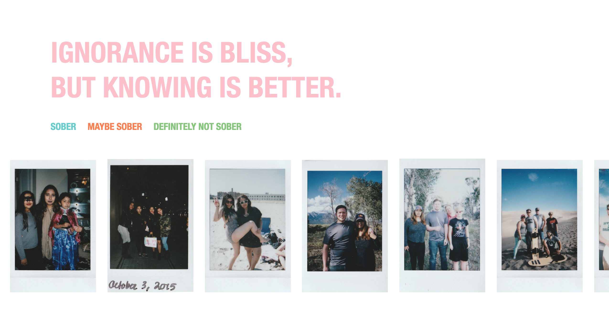

Bushra Sarker
Core Studio Interaction
I created an interactive album that showcases the polaroids I've been collecting since 2015. This project is very personal as I expose parts of my life that only a handful of people have seen. I decided to organize my pictures by the state of sobriety of the individuals in the photograph. I like to capture moments in time, so the viewer can see parts of my life. Organizing the photos in such way exposes another layer of information about the photographs.
This is what you will see when you first enter my collection. The title came from thoughts I was having when I wasn't sober and figured that it works perfectly with the idea of my collection. You can click on any of the sections you want to view.
As you scroll over on the page, more photographs appear. I chose this motion because it reminds me of a photo reel.

The viewer can closely examine each photograph with the magnifying effect that I included. It allows you to see in more details, observe anything within the photo and it exposes more information about each photograph. Personally, I enjoyed doing this throuhgout all my photos and it revealed things that I hadn't even noticed of before.
The viewer can identify each section by the color of the magnifying frame. I plan on continuing to use this outline to showcase my album to many of my friends and families.